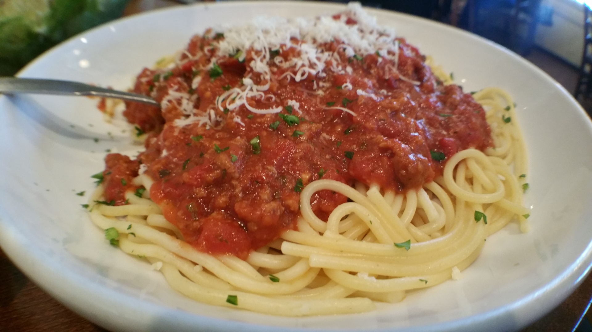

Spaghetti and meatballs is an Italian-American pasta dish made with spaghetti, tomato, and meatballs.
Originally inspired by similar dishes from southern Italy, the modern version of spaghetti and meatballs was developed by Italian immigrants in New York City. It grew in popularity during the first half of the 20th century and is today considered a classic in Italian-American cuisine both in New York City and the rest of the U.S.